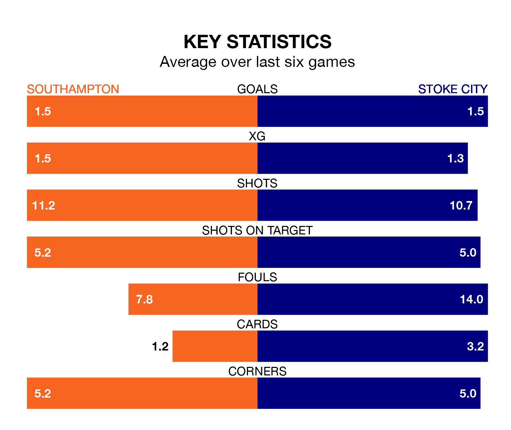

Southampton host Stoke City in Saturday's match at St. Mary's looking to bounce back from defeat last time out in EFL Championship.
The Saints, who sit fourth in the league after 44 games, fell to a 5-0 away defeat to Leicester City on Tuesday.
They face a Stoke side who picked up a win in their last match, a 3-0 victory against Plymouth Argyle, and who sit 18th in the table.
With 85 goals in 44 games so far this season, Southampton are the league's joint-second-highest scorers with 1.9 goals per game. But they are conceding more than average too, letting in 61 goals at a rate of 1.4 per game.
Stoke, meanwhile, are below average scorers, with 1.0 goal per game, compared to a league average of 1.3. They have conceded 1.4 goals per game.
In Adam Armstrong, the Saints have one of the league's most on-form strikers so far this season. He has notched 20 goals in 44 appearances, to sit second in the scoring charts.
His goal rate of one every 183 minutes is quicker than that of André Vidigal, City's top scorer with a goal every 279 minutes, and a total of six goals in 28 games.
In the last 10 years, Southampton and Stoke have played each other on 10 occasions. They won four each, and they drew twice.
On average, the Saints scored 0.9 goals and the Potters 0.9 in those matches.
Their last meeting was on October 3, when Southampton won 1-0 away.
The hosts are in mixed form in EFL Championship, with three wins and a draw from their last six games.
With two wins and three draws over that period, the Potters' form is slightly worse – they have taken nine points from 18, compared to Southampton's 10.
Updated: 07:59 (UTC), 26/04/24